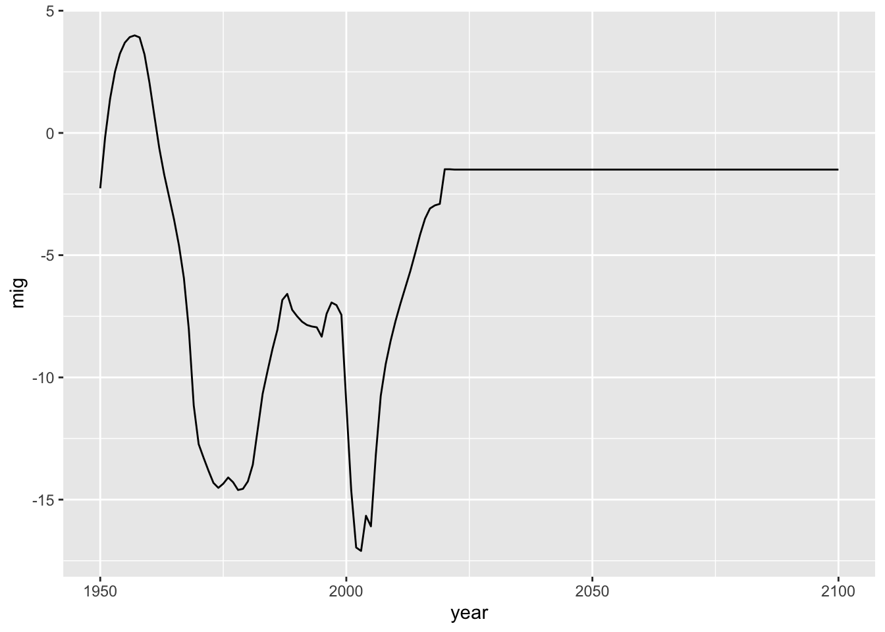
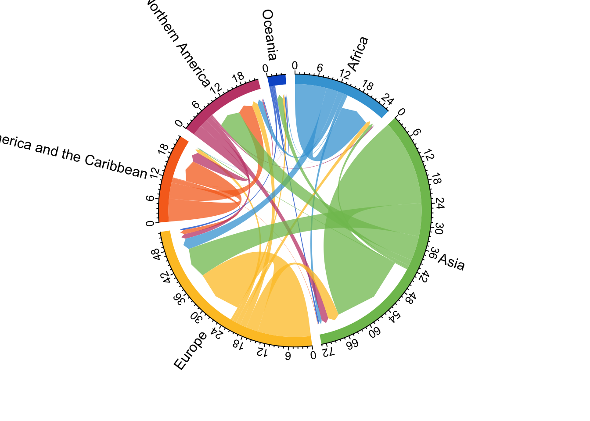
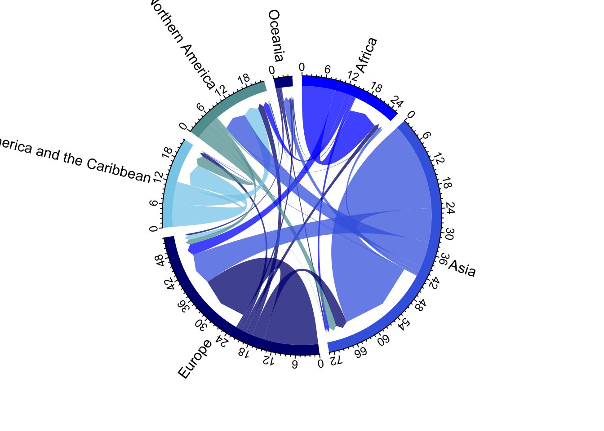
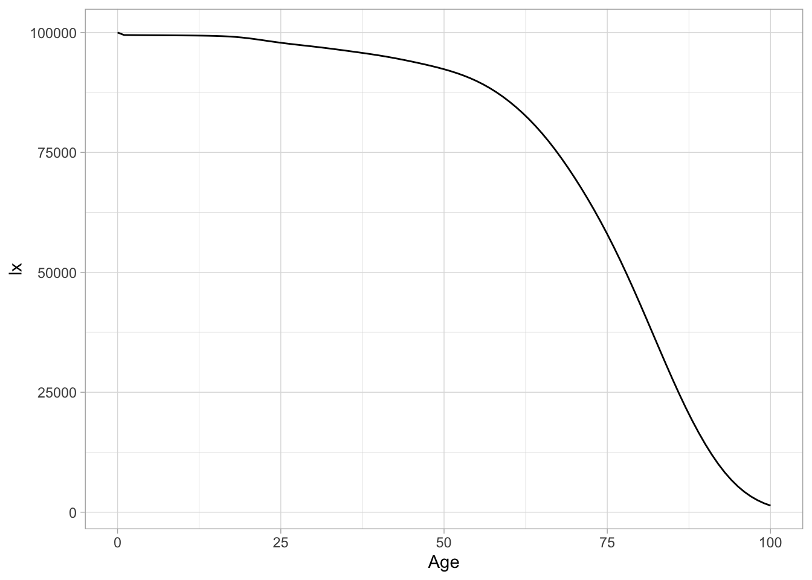

remotes::install_local(path = "paquetes/migest-master.zip",
upgrade = "never") # migest-master.zip
remotes::install_local(path = "paquetes/countrycode-main.zip",
upgrade = 'never') # fertestr-master.zip5 Migración y tablas de vida
5.1 Paquetes
5.1.1 Instalación local de paquetes si no hay internet
Carpeta de paquetes:
5.1.2 paquetes
if (!require("pacman")) install.packages("pacman") # instala pacman si se requiereCargando paquete requerido: pacmanpacman::p_load(tidyverse,
readxl,
writexl,
janitor,
remotes,
wppExplorer,
magrittr,
collapse,
fmsb,
migest, # ojo
countrycode, # ojo
DemoTools,
wpp2022) 5.2 Datos
sv1992<-readxl::read_excel("datos/censos_p2.xlsx", sheet = "El Salvador 1992") %>%
janitor::clean_names() %>% #
dplyr::mutate(total=male + female) %>% # ojo
dplyr::mutate(age=as.numeric(age)) #ojo
# de wpp2022
data("migration1dt")
data("mx1dt")
data("misc1dt")
data("popAge1dt")
mx1dt %<>%
left_join(misc1dt) %>%
left_join(popAge1dt)Joining with `by = join_by(country_code, name, year)`
Joining with `by = join_by(country_code, name, year, age)`data("e01dt")Vamos a trabajar con datos ya calculados para flujos
# para flujos datos del autor Abel and Cohen (2019) estimates
# Estos cuando tengas internet se descargan así:
# f <- read_csv("https://ndownloader.figshare.com/files/38016762", show_col_types = FALSE)
f <- readRDS("datos/f.rds")
head(f)# A tibble: 6 × 9
year0 orig dest sd_drop_neg sd_rev_neg mig_rate da_min_open da_min_closed
<dbl> <chr> <chr> <dbl> <dbl> <dbl> <dbl> <dbl>
1 1990 BDI BDI 0 0 0 0 0
2 1990 COM BDI 0 0 0 0 0
3 1990 DJI BDI 0 0 0 0 0
4 1990 ERI BDI 0 0 0 0 0
5 1990 ETH BDI 0 0 0 0 0
6 1990 KEN BDI 30 30 75.7 51.3 207.
# ℹ 1 more variable: da_pb_closed <dbl># Abel usa el paquete countrycode para generar regiones
f %>%
mutate(
orig = countrycode::countrycode(sourcevar = orig, # la variable de origen que tiene códigos
custom_dict = dict_ims, # el diccionario a usar
origin = "iso3c", # el tipo de abreviatura
destination = "region")) # que nos va a regresar# A tibble: 307,833 × 9
year0 orig dest sd_drop_neg sd_rev_neg mig_rate da_min_open da_min_closed
<dbl> <chr> <chr> <dbl> <dbl> <dbl> <dbl> <dbl>
1 1990 Africa BDI 0 0 0 0 0
2 1990 Africa BDI 0 0 0 0 0
3 1990 Africa BDI 0 0 0 0 0
4 1990 Africa BDI 0 0 0 0 0
5 1990 Africa BDI 0 0 0 0 0
6 1990 Africa BDI 30 30 75.7 51.3 207.
7 1990 Africa BDI 0 0 0 0.03 0
8 1990 Africa BDI 0 0 0 0 0
9 1990 Africa BDI 0 0 0 0.06 0
10 1990 Africa BDI 0 0 0 0 0
# ℹ 307,823 more rows
# ℹ 1 more variable: da_pb_closed <dbl>d <- f %>%
mutate(
orig = countrycode::countrycode(sourcevar = orig, # la variable de origen que tiene códigos
custom_dict = dict_ims, # el diccionario a usar
origin = "iso3c", # el tipo de abreviatura
destination = "region"), # que nos va a regresar
dest = countrycode::countrycode(sourcevar = dest,
custom_dict = dict_ims,
origin = "iso3c",
destination = "region")
) %>%
group_by(year0, orig, dest) %>%
summarise_all(sum) %>%
ungroup()
d# A tibble: 216 × 9
year0 orig dest sd_drop_neg sd_rev_neg mig_rate da_min_open da_min_closed
<dbl> <chr> <chr> <dbl> <dbl> <dbl> <dbl> <dbl>
1 1990 Africa Africa 4297155 7845806 5.47e6 6872677. 7728373.
2 1990 Africa Asia 240464 258816 7.24e5 283708. 554047.
3 1990 Africa Europe 555826 664496 1.91e6 830461. 2190967.
4 1990 Africa Latin… 1505 2709 7.81e3 9043. 56747.
5 1990 Africa North… 289058 301706 2.23e5 321650. 783334.
6 1990 Africa Ocean… 21550 23570 6.59e4 30186. 165598.
7 1990 Asia Africa 94088 158903 2.00e5 102036. 93577.
8 1990 Asia Asia 3616112 8617460 1.44e7 6969956. 10337980.
9 1990 Asia Europe 1496141 2322839 5.48e6 2851352. 4214903.
10 1990 Asia Latin… 14316 14343 1.07e5 20177. 136270.
# ℹ 206 more rows
# ℹ 1 more variable: da_pb_closed <dbl>5.3 Migración
5.3.1 wpp2022
El conjunto de datos migration de wpp2022 nos da la migración neta
migration1dt %>%
filter(name=="Uruguay") %>%
ggplot() +
aes(x=year, y=mig) +
geom_line()
5.3.2 Flujos bilaterales
5.3.2.1 Gráficos circulaes
5.4 Diagramas
Vamos a usar “2015-2020 pseudo-Bayesian estimates for plotting” de la base de Guy Abel
pb <- d %>%
filter(year0 == 2015) %>% # seleccionamos un año especifico
mutate(flow = da_pb_closed/1e6) %>% # pasamos el flujo cerrado a miles
select(orig, dest, flow) # necesitamos un objeto con estas tres variables
pb# A tibble: 36 × 3
orig dest flow
<chr> <chr> <dbl>
1 Africa Africa 8.69
2 Africa Asia 0.896
3 Africa Europe 3.31
4 Africa Latin America and the Caribbean 0.0361
5 Africa Northern America 1.59
6 Africa Oceania 0.264
7 Asia Africa 0.907
8 Asia Asia 23.8
9 Asia Europe 9.14
10 Asia Latin America and the Caribbean 0.233
# ℹ 26 more rowsmigest::mig_chord(x = pb) # objeto
d %>%
filter(year0 == 2015) %>% # seleccionamos un año especifico
mutate(flow = da_pb_closed/1e6) %>% # pasamos el flujo cerrado a miles
select(orig, dest, flow) %>%
mig_chord()
d %>%
filter(year0 == 2015) %>% # seleccionamos un año especifico
mutate(flow = da_pb_closed/1e6) %>% # pasamos el flujo cerrado a miles
select(orig, dest, flow) %>%
mig_chord(grid.col = c("blue", "royalblue", "navyblue", "skyblue", "cadetblue", "darkblue")
) 
5.4.1 Momento de práctica
5.5 Tabla de vida con {DemoTools}
Este paquete nos da la oportunidad de construir las tablas de vida con diferentes insumos, con cualquiera de las siguientes opciones:
Vector de muertes y vector de Población media
Vector de tasas de Mortalidad (nMx)
Vector de cocientes de mortalidad (nqx)
Vector de efectivos a edad exacta (lx)
5.5.1 Input: nMx
Datos de México 2000
nMx <- c(0.025429618,
0.000895531,
0.000364678,
0.000480071,
0.000979976,
0.001661119,
0.002167313,
0.002549786,
0.00307099,
0.003970018,
0.005461053,
0.007799417,
0.011317907,
0.016516166,
0.024145341,
0.035168272,
0.051143602,
0.074042144,
0.136811785)Nuestros grupos de edad
grupo_eda<-c(0,1,seq(5,85,by=5))
AgeInt <- inferAgeIntAbr(vec = nMx)mx_lifetable2000 <- lt_abridged(nMx = nMx,
Age = grupo_eda,
AgeInt = AgeInt,
axmethod = "un",
Sex = "m", mod = FALSE)nMx2010 <- c(0.018082902,
0.000680864,
0.000328649,
0.000495605,
0.001179152,
0.002071347,
0.002659697,
0.002986375,
0.003396466,
0.004205501,
0.00566518,
0.008027968,
0.011670117,
0.017170344,
0.025320726,
0.037292527,
0.054805372,
0.079982834,
0.148194498)
mx_lifetable2010 <- lt_abridged(nMx = nMx2010,
Age = grupo_eda,
AgeInt = AgeInt,
axmethod = "un",
Sex = "m",
mod = FALSE)5.5.2 Desplegando hasta grupos más allá de 85+
Cerrar la tabla en \(\omega\)=100
mx2020_100<-lt_abridged(nMx = nMx,
Age = grupo_eda,
AgeInt = AgeInt,
axmethod = "un",
Sex = "m",
mod = FALSE,
OAnew = 100) 5.5.3 Usando información de wpp2022
mx1dt %>%
filter(country_code==858) %>%
filter(year == 2020) -> data_uy
lt_uy_single<- lt_single_mx(nMx = data_uy$mxM,
Age = data_uy$age,
AgeInt = inferAgeIntAbr(vec = data_uy$mxM),
axmethod = "un",
Sex = "m",
mod = FALSE,
OAnew = 100)
lt_uy_single Age AgeInt nMx nAx nqx lx ndx
0 0 1 0.00532047 0.1386733 5.296199e-03 100000.000 529.619930
1 1 1 0.00013724 0.5000000 1.372306e-04 99470.380 13.650378
2 2 1 0.00011861 0.5000000 1.186030e-04 99456.730 11.795863
3 3 1 0.00010330 0.5000000 1.032947e-04 99444.934 10.272131
4 4 1 0.00009146 0.5000000 9.145582e-05 99434.662 9.093878
5 5 1 0.00008317 0.5000000 8.316654e-05 99425.568 8.268881
6 6 1 0.00007860 0.5000000 7.859691e-05 99417.299 7.813893
7 7 1 0.00007802 0.5000000 7.801696e-05 99409.485 7.755625
8 8 1 0.00008188 0.5000000 8.187665e-05 99401.729 8.138680
9 9 1 0.00009124 0.5000000 9.123584e-05 99393.591 9.068258
10 10 1 0.00010786 0.5000000 1.078542e-04 99384.522 10.719037
11 11 1 0.00013486 0.5000000 1.348509e-04 99373.803 13.400648
12 12 1 0.00017708 0.5000000 1.770643e-04 99360.403 17.593182
13 13 1 0.00024199 0.5000000 2.419607e-04 99342.810 24.037058
14 14 1 0.00033959 0.5000000 3.395323e-04 99318.773 33.721936
15 15 1 0.00048190 0.5000000 4.817839e-04 99285.051 47.833940
16 16 1 0.00067885 0.5000000 6.786197e-04 99237.217 67.344326
17 17 1 0.00093157 0.5000000 9.311363e-04 99169.872 92.340667
18 18 1 0.00122604 0.5000000 1.225289e-03 99077.532 121.398597
19 19 1 0.00152688 0.5000000 1.525715e-03 98956.133 150.978877
20 20 1 0.00178716 0.5000000 1.785564e-03 98805.154 176.422971
21 21 1 0.00195968 0.5000000 1.957762e-03 98628.731 193.091553
22 22 1 0.00202271 0.5000000 2.020666e-03 98435.640 198.905589
23 23 1 0.00198301 0.5000000 1.981046e-03 98236.734 194.611468
24 24 1 0.00187777 0.5000000 1.876009e-03 98042.123 183.927869
25 25 1 0.00175245 0.5000000 1.750916e-03 97858.195 171.341460
26 26 1 0.00164337 0.5000000 1.642021e-03 97686.853 160.403843
27 27 1 0.00157630 0.5000000 1.575059e-03 97526.449 153.609875
28 28 1 0.00155704 0.5000000 1.555829e-03 97372.840 151.495464
29 29 1 0.00158371 0.5000000 1.582457e-03 97221.344 153.848589
30 30 1 0.00164460 0.5000000 1.643249e-03 97067.496 159.506041
31 31 1 0.00172027 0.5000000 1.718792e-03 96907.989 166.564639
32 32 1 0.00179406 0.5000000 1.792452e-03 96741.425 173.404372
33 33 1 0.00185158 0.5000000 1.849867e-03 96568.020 178.638034
34 34 1 0.00189091 0.5000000 1.889124e-03 96389.382 182.091488
35 35 1 0.00192156 0.5000000 1.919716e-03 96207.291 184.690635
36 36 1 0.00195720 0.5000000 1.955287e-03 96022.600 187.751700
37 37 1 0.00201470 0.5000000 2.012673e-03 95834.849 192.884168
38 38 1 0.00210370 0.5000000 2.101490e-03 95641.964 200.990589
39 39 1 0.00222633 0.5000000 2.223854e-03 95440.974 212.246838
40 40 1 0.00237750 0.5000000 2.374677e-03 95228.727 226.137478
41 41 1 0.00254184 0.5000000 2.538614e-03 95002.590 241.174868
42 42 1 0.00270427 0.5000000 2.700618e-03 94761.415 255.914420
43 43 1 0.00285284 0.5000000 2.848776e-03 94505.500 269.225043
44 44 1 0.00298420 0.5000000 2.979754e-03 94236.275 280.800909
45 45 1 0.00310921 0.5000000 3.104384e-03 93955.474 291.673863
46 46 1 0.00324410 0.5000000 3.238846e-03 93663.800 303.362666
47 47 1 0.00341107 0.5000000 3.405262e-03 93360.438 317.916770
48 48 1 0.00363124 0.5000000 3.624659e-03 93042.521 337.247411
49 49 1 0.00392097 0.5000000 3.913298e-03 92705.274 362.783365
50 50 1 0.00429536 0.5000000 4.286155e-03 92342.490 395.794200
51 51 1 0.00476301 0.5000000 4.751694e-03 91946.696 436.902547
52 52 1 0.00533136 0.5000000 5.317186e-03 91509.793 486.574600
53 53 1 0.00600444 0.5000000 5.986467e-03 91023.219 544.907524
54 54 1 0.00678261 0.5000000 6.759686e-03 90478.311 611.604960
55 55 1 0.00766125 0.5000000 7.632015e-03 89866.706 685.864017
56 56 1 0.00863017 0.5000000 8.593090e-03 89180.842 766.339013
57 57 1 0.00967729 0.5000000 9.630691e-03 88414.503 851.492718
58 58 1 0.01078898 0.5000000 1.073109e-02 87563.011 939.646656
59 59 1 0.01196200 0.5000000 1.189088e-02 86623.364 1030.028082
60 60 1 0.01319940 0.5000000 1.311286e-02 85593.336 1122.373351
61 61 1 0.01451868 0.5000000 1.441404e-02 84470.963 1217.568134
62 62 1 0.01594341 0.5000000 1.581732e-02 83253.394 1316.845498
63 63 1 0.01749014 0.5000000 1.733851e-02 81936.549 1420.657959
64 64 1 0.01917061 0.5000000 1.898860e-02 80515.891 1528.883926
65 65 1 0.02097513 0.5000000 2.075744e-02 78987.007 1639.567669
66 66 1 0.02288317 0.5000000 2.262431e-02 77347.439 1749.932602
67 67 1 0.02487522 0.5000000 2.456963e-02 75597.507 1857.402959
68 68 1 0.02693509 0.5000000 2.657716e-02 73740.104 1959.802603
69 69 1 0.02908138 0.5000000 2.866458e-02 71780.301 2057.551991
70 70 1 0.03135622 0.5000000 3.087220e-02 69722.749 2152.494813
71 71 1 0.03383191 0.5000000 3.326913e-02 67570.254 2248.003638
72 72 1 0.03660293 0.5000000 3.594508e-02 65322.251 2348.013682
73 73 1 0.03975116 0.5000000 3.897648e-02 62974.237 2454.514084
74 74 1 0.04335636 0.5000000 4.243642e-02 60519.723 2568.240126
75 75 1 0.04746866 0.5000000 4.636814e-02 57951.483 2687.102656
76 76 1 0.05199502 0.5000000 5.067753e-02 55264.380 2800.662309
77 77 1 0.05703439 0.5000000 5.545303e-02 52463.718 2909.271875
78 78 1 0.06257633 0.5000000 6.067783e-02 49554.446 3006.856351
79 79 1 0.06861040 0.5000000 6.633477e-02 46547.590 3087.723767
80 80 1 0.07512615 0.5000000 7.240635e-02 43459.866 3146.770047
81 81 1 0.08211315 0.5000000 7.887482e-02 40313.096 3179.688183
82 82 1 0.08956096 0.5000000 8.572228e-02 37133.408 3183.160200
83 83 1 0.09745914 0.5000000 9.293067e-02 33950.247 3155.019195
84 84 1 0.10579725 0.5000000 1.004819e-01 30795.228 3094.362924
85 85 1 0.11456485 0.5000000 1.083578e-01 27700.865 3001.606205
86 86 1 0.12327489 0.5000000 1.161177e-01 24699.259 2868.020973
87 87 1 0.13261295 0.5000000 1.243666e-01 21831.238 2715.077670
88 88 1 0.14282711 0.5000000 1.333072e-01 19116.161 2548.321281
89 89 1 0.15405178 0.5000000 1.430344e-01 16567.839 2369.771378
90 90 1 0.16626274 0.5000000 1.535019e-01 14198.068 2179.430614
91 91 1 0.17936031 0.5000000 1.645990e-01 12018.637 1978.256183
92 92 1 0.19315316 0.5000000 1.761420e-01 10040.381 1768.532511
93 93 1 0.20746129 0.5000000 1.879637e-01 8271.849 1554.807218
94 94 1 0.22215733 0.5000000 1.999474e-01 6717.041 1343.055193
95 95 1 0.23734087 0.5000000 2.121634e-01 5373.986 1140.162919
96 96 1 0.25371726 0.5000000 2.251545e-01 4233.823 953.264235
97 97 1 0.27082236 0.5000000 2.385236e-01 3280.559 782.490736
98 98 1 0.28863464 0.5000000 2.522330e-01 2498.068 630.095360
99 99 1 0.30712501 0.5000000 2.662405e-01 1867.973 497.329962
100 100 NA 0.36629903 2.7129654 1.000000e+00 1370.643 1370.642941
nLx Sx Tx ex
0 99543.824 0.9954382 7468800.876 74.688009
1 99463.555 0.9991936 7369257.052 74.084939
2 99450.832 0.9998721 7269793.497 73.095039
3 99439.798 0.9998891 7170342.665 72.103650
4 99430.115 0.9999026 7070902.867 71.111047
5 99421.433 0.9999127 6971472.753 70.117505
6 99413.392 0.9999191 6872051.319 69.123295
7 99405.607 0.9999217 6772637.927 68.128689
8 99397.660 0.9999201 6673232.320 67.133966
9 99389.057 0.9999134 6573834.660 66.139422
10 99379.163 0.9999005 6474445.603 65.145411
11 99367.103 0.9998786 6375066.440 64.152384
12 99351.606 0.9998440 6275699.337 63.160969
13 99330.791 0.9997905 6176347.731 62.172066
14 99301.912 0.9997093 6077016.940 61.186992
15 99261.134 0.9995894 5977715.028 60.207604
16 99203.545 0.9994198 5878453.895 59.236384
17 99123.702 0.9991952 5779250.350 58.276271
18 99016.832 0.9989219 5680126.648 57.330119
19 98880.644 0.9986246 5581109.816 56.399837
20 98716.943 0.9983445 5482229.172 55.485255
21 98532.185 0.9981284 5383512.229 54.583610
22 98336.187 0.9980108 5284980.044 53.689701
23 98139.428 0.9979991 5186643.857 52.797397
24 97950.159 0.9980714 5088504.429 51.901206
25 97772.524 0.9981865 4990554.270 50.997817
26 97606.651 0.9983035 4892781.746 50.086389
27 97449.645 0.9983914 4795175.094 49.167945
28 97297.092 0.9984345 4697725.450 48.244721
29 97144.420 0.9984309 4600428.358 47.319119
30 96987.743 0.9983872 4503283.938 46.393326
31 96824.707 0.9983190 4406296.196 45.468864
32 96654.723 0.9982444 4309471.489 44.546289
33 96478.701 0.9981789 4212816.766 43.625382
34 96298.337 0.9981305 4116338.064 42.705306
35 96114.946 0.9980956 4020039.728 41.785188
36 95928.724 0.9980625 3923924.782 40.864596
37 95738.407 0.9980160 3827996.058 39.943675
38 95541.469 0.9979430 3732257.651 39.023222
39 95334.850 0.9978374 3636716.182 38.104349
40 95115.658 0.9977008 3541381.331 37.188162
41 94882.002 0.9975435 3446265.673 36.275492
42 94633.457 0.9973805 3351383.671 35.366543
43 94370.888 0.9972254 3256750.214 34.460959
44 94095.875 0.9970858 3162379.326 33.557983
45 93809.637 0.9969580 3068283.451 32.656782
46 93512.119 0.9968285 2974473.814 31.756920
47 93201.479 0.9966781 2880961.695 30.858485
48 92873.897 0.9964852 2787760.215 29.962217
49 92523.882 0.9962313 2694886.318 29.069396
50 92144.593 0.9959006 2602362.436 28.181636
51 91728.245 0.9954816 2510217.843 27.300794
52 91266.506 0.9949662 2418489.598 26.428752
53 90750.765 0.9943491 2327223.092 25.567357
54 90172.509 0.9936281 2236472.327 24.718325
55 89523.774 0.9928056 2146299.818 23.883148
56 88797.673 0.9918893 2056776.043 23.062981
57 87988.757 0.9908903 1967978.371 22.258547
58 87093.187 0.9898218 1879989.614 21.470134
59 86108.350 0.9886921 1792896.426 20.697608
60 85032.149 0.9875018 1706788.076 19.940665
61 83862.179 0.9862408 1621755.927 19.198975
62 82594.972 0.9848894 1537893.749 18.472445
63 81226.220 0.9834281 1455298.777 17.761290
64 79751.449 0.9818437 1374072.557 17.065855
65 78167.223 0.9801355 1294321.108 16.386507
66 76472.473 0.9783189 1216153.885 15.723260
67 74668.805 0.9764142 1139681.412 15.075648
68 72760.203 0.9744391 1065012.606 14.442787
69 70751.525 0.9723932 992252.404 13.823464
70 68646.502 0.9702477 921500.879 13.216646
71 66446.253 0.9679481 852854.377 12.621743
72 64148.244 0.9654155 786408.124 12.038901
73 61746.980 0.9625670 722259.880 11.469133
74 59235.603 0.9593279 660512.900 10.914011
75 56607.932 0.9556403 601277.297 10.375529
76 53864.049 0.9515283 544669.366 9.855704
77 51009.082 0.9469968 490805.317 9.355138
78 48051.018 0.9420091 439796.235 8.875011
79 45003.728 0.9365822 391745.217 8.416015
80 41886.481 0.9307336 346741.489 7.978430
81 38723.252 0.9244809 304855.008 7.562183
82 35541.828 0.9178420 266131.756 7.166909
83 32372.738 0.9108349 230589.929 6.791996
84 29248.047 0.9034777 198217.191 6.436620
85 26200.062 0.8957884 168969.144 6.099779
86 23265.249 0.8879845 142769.082 5.780298
87 20473.699 0.8800121 119503.833 5.473983
88 17842.000 0.8714595 99030.133 5.180441
89 15382.954 0.8621765 81188.134 4.900345
90 13108.353 0.8521350 65805.180 4.634798
91 11029.509 0.8414108 52696.827 4.384593
92 9156.115 0.8301471 41667.318 4.149974
93 7494.445 0.8185180 32511.203 3.930343
94 6045.514 0.8066660 25016.759 3.724372
95 4803.905 0.7946231 18971.245 3.530200
96 3757.191 0.7821119 14167.340 3.346229
97 2889.314 0.7690090 10410.149 3.173285
98 2183.021 0.7555499 7520.835 3.010660
99 1619.308 0.7417740 5337.815 2.857544
100 3718.507 0.6966347 3718.507 2.712965Comparemos:
e01dt %>%
filter(name == "Uruguay") %>%
filter(year == 2020) country_code name year e0M e0F e0B
<int> <char> <int> <num> <num> <num>
1: 858 Uruguay 2020 74.6882 81.911 78.4298lt_uy_single %>%
ggplot()+
aes(x=Age,
y=lx) +
geom_line()+
theme_light()
5.5.3.1 De una tabla quinquenal a una de edades simples
mx_single2000 <- lt_abridged2single(nMx = nMx,
Age = grupo_eda,
axmethod = "un",
Sex = "m",
mod = T,
OAnew = 100)5.6 Pendientes
Con este paquete también podemos hacer evaluaciones, pero podemos hacer índices más complejos.
Trabaja con vectores individuales.
5.6.0.1 Whipple
check_heaping_whipple(Value=sv1992$total,
Age= sv1992$age,
ageMin = 25,
ageMax = 60,
digit = c(0, 5))[1] 1.2602645.6.0.2 Noumbissi
check_heaping_noumbissi(sv1992$male,
Age=sv1992$age,
ageMin = 30,
ageMax = 60,
digit = 0)[1] 1.411808Mayor a 1, el dígito atrae; menor que 1, el índice “repele”
Vamos a hacer un “loop”
# Para todos los dígitos
for(i in 0:2){
Ni<-check_heaping_noumbissi(sv1992$total,
sv1992$age,
ageMin = 30+i, # ojo
ageMax = 60+i,
digit = i)
names(Ni)<-i
print(Ni)
} 0
1.388983
1
0.6612601
2
1.202751 for(i in 3:9) {
Ni<-check_heaping_noumbissi(sv1992$total,
sv1992$age,
ageMin = 20+i, #ojo
ageMax = 50+i,
digit = i)
names(Ni)<-i
print(Ni)
} 3
0.9451307
4
0.8988784
5
1.145512
6
0.9623871
7
0.962849
8
1.004804
9
0.831283 5.6.0.3 Spoorrenberg
check_heaping_spoorenberg(sv1992$total,
sv1992$age,
ageMin = 23,
ageMax = 62)[1] 1.4802615.6.0.4 Indice de Myers
check_heaping_myers(Value = sv1992$male,
Age = sv1992$age,
ageMin = 10,
ageMax = 89,
method = "pasex")[1] 6.9062855.6.1 Opcional
sprague_male <- graduate(males$n, age, AgeInt = c(rep(5, times=17), 15), method = “sprague”)
single.age <- names2age(sprague_male)
ggplot() + aes(x=single.age, y=sprague_male) + geom_line()
sprague_female <- graduate(females$n, age, AgeInt = c(rep(5, times=17), 15), method = “sprague”) single.age <- names2age(sprague_female)
ggplot() + aes(x=single.age, y=sprague_female) + geom_line()
6 El grupo de 85 y más queda abierto…
ggplot() + geom_bar(aes(x=single.age, y=sprague_female, fill=“Mujeres”), stat=“identity” ) + geom_bar(aes(x=single.age, y=-sprague_male, fill=“Hombres”), stat=“identity”)+ coord_flip() + labs(y= “Población desagregada”)